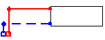
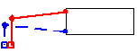
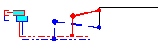
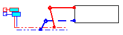
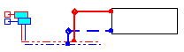

Az AUTO módban a szerkesztõ automatikusan megkeresi és felajánl egy lehetséges bekötési helyet az aktuálisan beillesztett elemeknek.
Az AUTO mód rendelkezik saját mezõvel a képernyõ jobb alsó sarkában (lásd a 4.2. fejezetet). Ha az AUTO betûk kéken világítanak a mód be van kapcsolva, ha szûrkén inaktív.
Az AUTO mód mûködése, az elemek behelyezése során megjelenõ ferde keresztek által válik érzékelhetõvé, amelyek az elemnek a program által javasolt beillesztési helyét mutatják. Ugyanakkor az elem oly módon van mozgatva, hogy létezõ struktúrához legyen kapcsolható.
! Az elemek
beillesztésekor, az AUTO mód átmenetileg átállítható a SHIFT gomb segítségével: Ha az AUTO mód
globálisan kikapcsolt, de egy új elem beillesztésekor szükség van rá, elegendõ
megnyomni, és úgy tartani a SHIFT billentyût, a program úgy fog viselkedni
mintha a mód be lenne kapcsolva.
Ha
az AUTO mód globálisan bekapcsolt, de egy új elem beillesztésekor nem kívánt
jelenségeket okoz, elegendõ megnyomni, és úgy tartani a SHIFT billentyût, a
program úgy fog viselkedni mintha a mód ki lenne kapcsolva.
A
fenti figyelmeztetést másként felírva:
AUTO + Shift => AUTO
AUTO + Shift => AUTO
A „Konstrukció” rétegben a megfelelõ típusú munkalapon ez az üzemmód használatos helyiségek szerkesztése során „fal” típusú elemekbõl, a fûtõfelületek és az osztók közötti bekötések szerkesztéséhez, valamint a FF-en belüli vezetékhálózat megtört vonalak felhasználásával történõ rajzolásakor is.
Az „Installáció” rétegben az AUTO üzemmód az elemek vagy modulok behelyezése során kerül felhasználásra. Modulok (több, az eszközsávban elmentett elem együttesei) AUTO üzemmódban történõ behelyezése során a program kiválasztja a szakaszokat, amelyek sehova nincsenek bekötve. Ezek a szakaszok automatikusan „keresik" a helyeket, amelyekre rákapcsolódhatnak.
Elsõ körben a program a már létezõ bekötési pontokra kísérli meg a bekötést. Ha a közelben nincsenek ilyen pontok, a program igyekszik a belsõ szakaszok pontjaira rákötni, végsõ soron pedig a szakaszok részleteire.
Ha teljes modul kerül behelyezésre, a program igyekszik megõrizni a szakaszok elrendezését, szükség esetén meghosszabbítva õket és eltolva a teljes modult, hogy hozzáillessze az installáció létezõ elrendezéséhez.
Az AUTO üzemmód a szakaszok automatikus bekötésén kívül törekszik (az általános adatokban) beállított modul megadott távolságban történõ elhelyezésére a létezõ födémtõl. A program e tulajdonságának igénybevétele céljából a modulok beállítása során bekapcsolt AUTO üzemmódban a födémre kell helyezni a modult. A program magától áthelyezi a beállított modult a födém alá. A radiátor távolságát a födémtõl a „Terv opciói" ablak „Szerkesztés" könyvjelzõjén lehet megadni.
¨ A födémtõl való alapértelmezett távolság megváltoztatása céljából:
1. Válassza az „Opciók / Általános adatok” menüpontot (F7),
2. Lépjen a “Szerkesztés” könyvjelzõre,
3. Adja meg a “Radiátor távolsága a födémtõl” mezõ értékét.
Az AUTO üzemmód használatos a szakaszok és szakaszpárok beállításakor is. Szakaszpárok beállítása során a program a beállított szakaszok formájának intelligens módosítására törekszik úgy, hogy megõrizze a vízszintes és függõleges szakaszrészleteket. Elõfordul azonban (konkrétan a radiátor és az osztó fõvezetékhez kötése során szakaszpár segítségével), hogy a program nem képes magától helyesen elhelyezni a szakaszokat. Ilyenkor hasznosak a Shift és a Ctrl billentyûk, melyek közül az elsõ kikapcsolja az automatikus bekötést, a második pedig azt eredményezi, hogy a program már nem módosítja a beállított pontokat.
Az alábbi ábrák illusztrálják a Ctrl billentyû hatását (elõfeltétel: az AUTO üzemmód be van kapcsolva)
- A szakaszpár beállítása elõtt beállításra került a radiátor. Ezután alulról kezdve beállításra kerül a szakaszpár:
 
Ctrl nélkül Ctrl használatával
- Mint látható, ebben az esetben a Ctrl billentyû használata a szakaszok helytelen elhelyezését eredményezi. Azonban vannak olyan esetek, amikor a Ctrl billentyû használata pozitív eredménnyel jár, különösen a strangvezeték bekötésekor az elosztó hálózatba, a strangvezeték szakaszától kezdve.
- Példaképpen, radiátor és osztó szakaszpár segítségével történõ bekötésekor a fõvezetékbe a radiátorral kezdve, a program nem képes helyesen elhelyezni a szakaszokat:
 
Ctrl nélkül Ctrl használatával
- Ebben a helyzetben a Shift billentyût kell használni a szakaszpár utolsó pontjának beállításához (az osztónál), hogy a program ne próbálja meg az automatikus bekötést:

- A fenti helyzetben nem szükséges a Ctrl és Shift billentyûk használatához menekülni, ha a szakaszokat az osztó fõvezetékétõl kezdve hozzuk létre a radiátorig.
! Összefoglalva: ha a szakaszpárok beállítása bekapcsolt AUTO és ORTO üzemmódban nem eredményezi a kívánt hatást (a szakaszok nem egyenesek), akkor meg kell próbálni a másik oldalról kezdve beállítani a szakaszpárokat.
Az AUTO üzemmód kipróbálásának a legjobb módja, ha egy szakaszpárt különbözõ elemekhez kapcsolunk hozzá és felszálló vezetékpárt szerkesztünk az egyoldali felszálló vezeték alapmoduljának felhasználásával a meglévõ födémrendszeren. A páros épületszinteket a beállítás elõtt meg kell fordítani.
¨ Felszálló vezetékpár létrehozása céljából:
1. Be kell állítani a "G.R. egyoldali strangvezeték"-et az eszközsáv "Strangvezetékek" könyvjelzõjébõl. Az ilyen felszállóvezeték kiterjeszthetõ csoportot képez, de ezt a tulajdonságát most nem használjuk fel.
2. Az eszközsávból az "egyoldali strangvezeték modulja" pontot kell választani.
3. Gyõzõdjön meg róla, hogy az AUTO üzemmód be van-e kapcsolva.
4. A Ctrl+Tab billentyûkkel fordítsa meg a modult még a beállítás elõtt.
5. Helyezze a modult a felszállóvezeték létezõ elsõ épületszintje fölé.
6. A program megadja a modul rákötésének módját.
7. Az épületszint beállítása céljából kattintson az egér baloldali nyomógombjával.
8. Hasonlóan állíthatók be a következõ épületszintek.